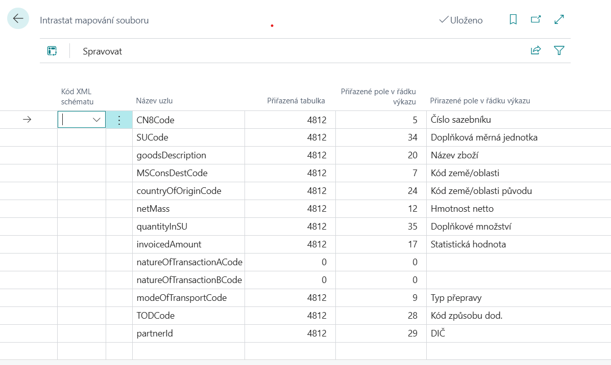

Výkaz Intrastat
Aktualizace 17.10.2025
Pro účely generování výkazu Intrastat se používá standartní funkcionalita.
Rozdíl oproti standardní funkčnosti je v struktuře souboru s příponou .xml generovaném pro účely slovenského vykazování.
Pro aktivování slovenských funkčností jsou potřebná tato nastavení, využijte následující postup:
Nastavení financí
- Vyberte ikonu
 , zadejte Nastavení financí a poté vyberte související odkaz.
, zadejte Nastavení financí a poté vyberte související odkaz. - Na kartě Nastavení financí je nutné vybrat do pole Legislativa hodnotu SK.
- Potvrďte pomocí tlačítka OK.
Important
Od verze 25 je potřeba mít nastavenu základní funkcionalitu v Nastavení hlášení Intrastat (viz dokumentace).
Intrastat mapování souboru
Nastavení slouží pro mapování polí v aplikaci na uzly .xml. Tato tabulka je součástí dodávaného konfiguračního balíčku.
- Vyberte ikonu , zadejte Intrastat mapování souboru a poté vyberte související odkaz.
- Na kartě Intrastat mapování souboru zkontrolujte, nebo doplňte nastavení.
- Potvrďte pomocí tlačítka OK.

Tip
Kompletní nastavení mapování najdete v Konfiguračním balíčku, který získáte spuštěním Asistovaného nastavení Nastavit SK lokalizaci (buď pouze naimportujte poslední verzi pomocí tlačítka AssistEdit ve stávající společnosti nebo v prázdné společnosti proveďte kompletní import vzorové parametrizace pomocí akce Použít balíček).
Export souboru pro Intrastat
- Vyberte ikonu , zadejte Deníky Intrastat a poté vyberte související odkaz.
- Vložte řádky deníku pomocí funkce Návrh řádků.
- Exportujte pomocí funkce Exportovat, je nutné vyplnit Kontaktní osoba, Typ, Pořadové číslo výkazu
- Potvrďte pomocí tlačítka OK.